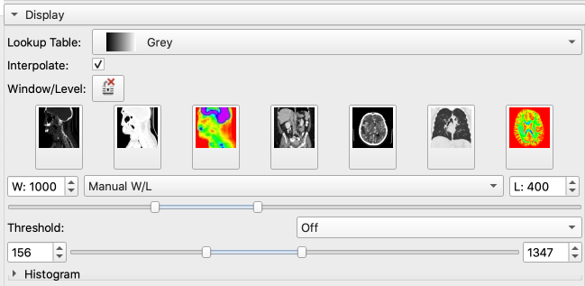
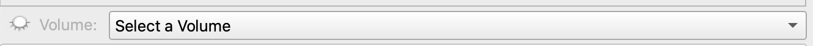
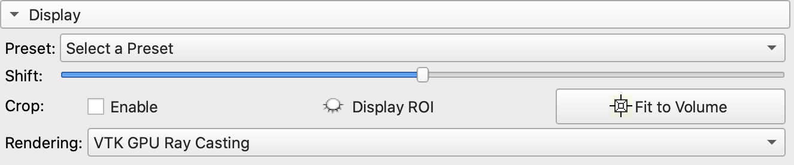
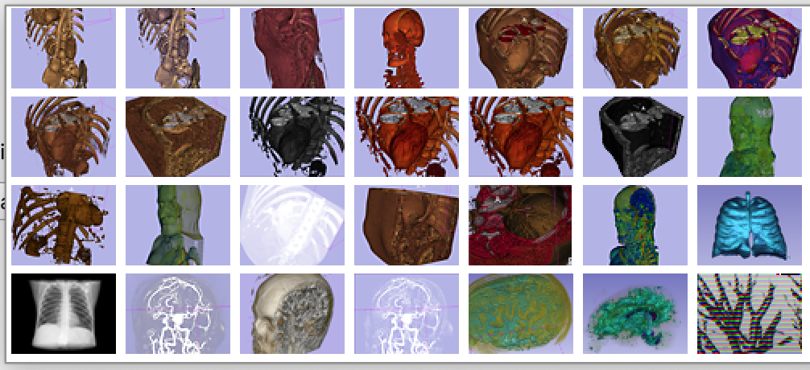

Femur Segmentation 9553F
In this module, we will segment the Pelvis and Femurs from the 9553F DICOM dataset.
LOAD DICOM Volume
Load the 9553F Body Bone dataset into Slicer, as discussed in the Import DICOM datasets documentation. Alternatively, you can load the 6 Body Bone NRRD volume from the MATLAB drive.

Note: you won't see the 3D render until you follow Volume Rendering steps below
Volumes Module
Whenever you first bring up a volume in Slicer, you should always review the Volume Information.

- Bring up the Volumes Module
- Open the Volumes Information tab and review

- This volume has 512 rows and columns and 473 slices (124 million voxels)
- The volume also anisotropic voxels with dimensions of 0.98mm x 0.98mm x 3.5mm
When segmenting, it helps to adjust the contrast so that the target anatomy (e.g. the femur) is brighter than the rest of the tissue.

- Select the CT Bone Window Level Preset

Your volume should have the contrast shown in the right column (CT Bone LUT).

Notice how using this LUT deemphasizes the tissue (almost black) while highlighting the bone (almost bright white).
Volume Rendering

Volume Rendering is useful for exploring a volume and quickly rendering anatomical structures. This is NOT a substitute for segmentation. This is mostly for display purposes only. For example, there is nothing to export from a volume rendering. That being said, it is often useful to quickly render anatomical structures before segmenting.
- Bring up the Volume Rendering Module
- Select the Body Bone volume from the pop up menu


- Adjust the Shift slider to reveal a render of the cadaver

- Select the CT-AAA to reveal a render of the cadaver's skeletal system

-
The goal is to reveal the following:

-
Now you try: adjust the Shift slide to reveal the implant in the left knee. There are two parts to the implant: one in the femur and one in the tibia.
[img-vol-render-3D]:https://saldenest.s3-us-west-2.amazonaws.com/slicer/CTFemur-volume-rendering-3D.png width=500px
[img-vol-render-preset]:https://saldenest.s3-us-west-2.amazonaws.com/slicer/volume-render-presets.png width=400px
[img-vol-render-disp]:https://saldenest.s3-us-west-2.amazonaws.com/slicer/volume-render-display.png width=400px
[img-vol-render-select]:https://saldenest.s3-us-west-2.amazonaws.com/slicer/volume-render-select-volume.png width=300px
[img-vol-render-select-menu]:https://saldenest.s3-us-west-2.amazonaws.com/slicer/CTFemur-vol-render-select-volume-menu.png width=300px
[img-volume-render-icon]:https://saldenest.s3-us-west-2.amazonaws.com/slicer/volume-render-icon.png width=24px
Crop the Volume
Cropping the volume is a critical step in Slicer as it helps reduce the memory load (and avoid crashes) by eliminating parts of the volume that are not relevant to your project. We can use the Volume Rendering module to create an ROI (region of interest) that can then be used to crop the volume in the Crop Volume module.
- Under the display tab (in the Volume rendering module) Enable Crop and Display the ROI
![ ][img-enable-crop]
[img-enable-crop]:https://saldenest.s3-us-west-2.amazonaws.com/slicer/volume-render-enable-crop.png width=400px
- Adjust the Volume Rendering ROI handles to capture the femurs and exclude much of the noise, such as the table or the hands. Be sure to keep the implant that can be found in the left tibia.
![
The goal is to capture something like the above. Notice how the femur heads and lower flanges are darker than the rest of the femur. This indicates a level of bone degeneration that would be expected in an older female with a knee replacement.
][img-CTFemur-crop-ROI-3D]Again, since we are in the Volume Rendering module, we haven't actually cropped or modified anything. We have only modified the render (display of the 3D model).
- Toggle Enable Crop to demonstrate that the original volume is still there.
To crop the actual volume itself, we need the Crop Volume module
- Search for the Crop Volume module using the module finder tool (looking glass icon)
![ ][img-crop-vol-search]
[img-crop-vol-search]:https://saldenest.s3-us-west-2.amazonaws.com/slicer/crop-volume-search.png width=400px
- Use the following settings:
![ ][img-crop-vol-settings]
IO tab: Notice that the default for
Input ROIis already the "Volume rendering ROI" that you created in the Volume Rendering module. ForOutput volume, select "Create new volume as..." and enter "BODY BONE crop"Advanced tab: Be sure to check "Interpolated cropping" and "Isotropic space". Set the
Spacing Scaleto1.10xand select "B-spline".Volume Information tab:
Input Volumeindicates the dimensions of the original Body Bone volume.Cropped volumeindicates the dimensions of the volume to be created. Notice how we will get fewer rows and columns, but more z-slices
A NOTE ABOUT ISOTROPIC SPACING and the Spacing Scale setting: What isotropic spacing actually does is up- or downsample the 3D volume. Basically, you are adding or subtracting rows, columns, or slices. Subtracting rows and columns means that you are downsampling, which should ultimately create a smaller volume, which in turns saves memory (and hopefully avoids crashing Slicer). Ultimately, we want 10X the amount of RAM to the loaded volumes taking memory in Slicer.
For 3D processing, you rarely benefit from having high in-plane resolution if distance between planes is large. For example, a volume of 2500x2500x500 (with spacing of 0.1x0.1x0.5) will give you approximately same quality 3D reconstructions as a volume of 500x500x500 (with spacing of 0.5x0.5x0.5). This means we rarely want to upsample and instead should use a larger Spacing scale setting to downsample the volume (even larger than shown here). See the discussion here: Is there a way to reduce the CPU usage and reduce the amount of RAM used? - #3 by goetzf - Support - 3D Slicer Community
When you have set all of the settings, click "Apply".
- This might take a bit, so don't panic if you get the spinning disk of death.
- This may also end anticlimactically - nothing may seem to happen.
Data Review
To check that something actually happened, we can review the Data module, which displays a hierarchy of the loaded volumes and other relevant data
- Bring up the Data module ![][img-data-button]
![
You should see the new BODY BONE crop volume in this list.
][img-data-list]- Display Crop Volume: To display the new crop volume, click on the eye-cube icon in the BODY BONE crop row. This should display this volume in the slice viewers and hide the other volume.
- Delete Original Volume: Right-Click on the original "6 BODY BONE" volume and select "delete". >We won't need this volume any more and deleting it will help save on computer memory (and avoid slicer crashes). > Also, we can always reload the volume from the DICOM dataset if needed.
- Hide the Volume Rendering ROI: Click on the corresponding eye-icon. We don't really need this ROI anymore, so we may as well hide it.
Save Your Data
Now would be a good time to save your data. Remember, you need to create a new folder to save this project. You can call it something like "CTFemur"
![][img-save-dialog]
How to create Create a New Folder.
Notice in the directory column that each file has a default path. We want to change the folder paths for all of these files so that they are stored in the same new folder. To do so, do the following:
- Ensure that all of the files are checked.
- Click on the "Change directory for selected files"
- In the dialog the pops-up, navigate to the location where you want to create your folder. The Documents folder is a good place to start (Macs should avoid saving stuff on the desktop as it can slow down your computer.).
- Create a new folder in that location
- Call this folder "CTFemur" or something similar. And select OK.
Save everything
- Every file should now have the same path in the directory column
- Every file should be checked in the check column.
- Click on the Save Button.
[img-save-dialog]:https://saldenest.s3-us-west-2.amazonaws.com/slicer/CTFemur-save-dialog.png width=500px
[img-data-list]:https://saldenest.s3-us-west-2.amazonaws.com/slicer/CTFemur-data.png width=400px
[img-data-button]:https://saldenest.s3-us-west-2.amazonaws.com/slicer/button-data-module.png width=25px
[img-crop-vol-settings]:https://saldenest.s3-us-west-2.amazonaws.com/slicer/CTFemur-crop-volume-settings.png width=400px
[img-CTFemur-crop-ROI-3D]:https://saldenest.s3-us-west-2.amazonaws.com/slicer/CTFemur-crop-ROI-3D.png width=600px
Segment Editor
We are now ready to segment the femurs. Remember, when you segment, you actually create a new volume that is the same size as the original volume, just like you would when creating a logical array. However, segmentation volumes are usually label maps with more values than just 0 and 1. These are not intensity values. They indicate segmented structures and there will be the same value for every structure that was segmented. So, the left femur voxels will all have one label (like a 1), while the right femur voxels will have another label (like a 2). Everywhere that is not segmented will have a label of 0.
Initial settings
- Bring up the Segment editor module ![][img-seg-editor]
- Rename the Segmentation as "Femur Segmentation"
![ ][img-seg-edit-rename]
- Set the Master volume to "BODY BONE crop"
![ ][img-seg-edit-settings]
- Notice that in the Data module there is now something called "Femur Segmentation"
![
The yellow highlight indicates the volume to which the segmentation volume is linked.
][img-data-segment][img-data-segment]:https://saldenest.s3-us-west-2.amazonaws.com/slicer/CTFemur-data-segment.png width=400px
[img-seg-edit-settings]:https://saldenest.s3-us-west-2.amazonaws.com/slicer/CTFemur-seg-editor-settings.png width=400px
[img-seg-edit-rename]:https://saldenest.s3-us-west-2.amazonaws.com/slicer/seg-editor-rename-segment.png width=200px
Add Segmentations to the Segmentation table
- Back in the Segment Editor, click on the add button to add a new segmentation ![][img-add-button]
- In the table, rename the default segmentation ("segment_1") to "Skeleton".
To Rename, double-click on the name.
- Add two more segmentations called "Femur_Left" and "Femur_Right"
- Color to taste by double-clicking on the color swatches
![
This table dictates what we add to our segmentation volume. For example, if we select the Femur_Left row, as shown here, any label that we add to the volume (by painting or thresholding, etc.) will get the Femur_Left label, which is both a color (dark red) and a number that is stored in the segmentation volume.
][img-seg-edit-table1][img-seg-edit-table1]:https://saldenest.s3-us-west-2.amazonaws.com/slicer/CTFemur-seg-edit-table1.png width=400px
[img-add-button]:https://saldenest.s3-us-west-2.amazonaws.com/slicer/seg-editor-add-button.png width=48px
[img-seg-editor]:https://saldenest.s3-us-west-2.amazonaws.com/slicer/mod-menu-segment-editor.png width=175px
Capture the Skeleton
Our strategy for capturing the femurs will be to first segment the skeleton in the volume. Since bone has such a high contrast compared to the rest of the tissue, this should be relatively easy to accomplish using the thresholding tool.
- Before proceeding, be sure to select the Skeleton Label in the Segmentation table.
- Bring up the Threshold Tool (![][img-thresh-tool button]) and enter the following settings:
![ ][img-thresh-settings]
- Click apply.
![
Voila, le squelette. Notice that we excluded the knee implant from the segmentation.
][img-skel-3D]- Click on the Show 3D button ![][img-show-3D] to see the skeleton segmentation in the 3D viewer
[img-show-3D]:https://saldenest.s3-us-west-2.amazonaws.com/slicer/seg-editor-show-3D-button.png width=64px
[img-skel-3D]:https://saldenest.s3-us-west-2.amazonaws.com/slicer/CTFemur-segment-skeleton-3D.png width=500px
[img-thresh-settings]:https://saldenest.s3-us-west-2.amazonaws.com/slicer/CTFemur-threshold-settings.png width=400px
[img-thresh-tool button]:https://saldenest.s3-us-west-2.amazonaws.com/slicer/seg-editor-threshold-button.png width=25px
Capture the Right Femur Head
Now that we have a segmentation for the skeleton, we need to separate out the femurs. To do this, we will use a neat trick involving the Paint and Island tools. Review this video for more information: PERKlab - Create Femur Model
- First, however, click on the "Use for masking" button in the Threshold tool.
This changes the Masking settings. Notice that the "editable intensity range" is now checked. This forces all segmenting tools to only label voxels that fall in that intensity range
- The Painting Tool should now be active. If not, click on the Paint tool button (![][img-paint-button])
-
Notice how the Paint Tool has the same Masking tab that we saw in the Threshold Tool. Every tool has this masking tab.
The
Editable Areashould be set to "Everywhere." Sometimes this gets switched to another setting and can cause confusion when you are unable to paint where you think you should be able to pain.Modify other segmentsshould be set to "Overwrite All". This will allow you to overwrite one label with another, which you may need to do. Make sure theEditable intensity rangeremains checked. This will force the Paint tool to only paint voxels that fall within that intensity range, which we set to capture bone intensities. -
Activate
Sphere BrushandEdit in 3D Views
![ ][img-paint-settings]
- Select "Femur_Right" in the segmentation table.
- In the transverse viewer (Red viewer), scrub to a section that shows the femur head inserted into the pelvis
- Move the mouse to the center of the femur head
- Adjust the size of the paintbrush by holding shift while scrolling on the mouse
- The size of the paintbrush should match the largest cross-section of the femur head.
You may need to scrub through several slices to find the largest cross-section. Remember, you are using a sphere brush, so you are editing in 3D. That is, you will be painting voxels that are both above and below the current slice. Keep an eye on the 3D view for reference
- Once you have your paintbrush in position on the largest cross-section, click the left mouse button once.
- The femur head should now be a different color from the skeleton—as long as you have selected the "Femur_Right" row in the segmentation table
![
Inspect your work. Make sure that the femur head is cleanly separated from the pelvis.
][img-femur-right-head-segment]TIME TO SAVE YOUR WORK
- When you click on the Save button, you will get the "Save Scene and Unsaved Data" pop-up dialog
- Only the files that have changed will be checked.
Usually its the MRML Scence file and the Segmentation.seg.nrrd file. Don't check anything else — they don't need to be updated
- Click on "Save"
- Click on "Yes to ALL"
Add the rest of the Right Femur
- Switch to the Island Tool (![][img-island-button])
- Select "Add Selected Island"
- In the Coronal View (Green Slice Viewer), click on the femur, somewhere in the middle of the shaft
- The Right Femur should now be labeled as such
![
Right Femur labeled in blue. Note, your femur head may have holes in it. This is because the intensity of the femur head has decreased (due to degeneration) so its intensity matches tissue intensity.
][img][img]:https://saldenest.s3-us-west-2.amazonaws.com/slicer/CTFemur-segment-add-selected-island-4up.png width=500px
[img-island-button]:https://saldenest.s3-us-west-2.amazonaws.com/slicer/seg-editor-islands-button.png width=25px
[img-femur-right-head-segment]:https://saldenest.s3-us-west-2.amazonaws.com/slicer/CTFemur-segment-right-femur-head.png width=500px
[img-paint-settings]:https://saldenest.s3-us-west-2.amazonaws.com/slicer/seg-editor-paint-settings.png width=400px
[img-paint-button]:https://saldenest.s3-us-west-2.amazonaws.com/slicer/seg-editor-paint-button.png width=25px
Remove the Tibia and miscellaneous bone
Time to clean up the Right Femur segmentation. In this step, you remove any bone that is labeled Right Femur (blue) but that is not right femur.
Scissors Tool
The scissors tool can quickly edit your segmentation in the 3D Viewer
- Bring up the Scissors Tool (![][img-scissors-button])
- Select the Right Femur label in the Segmentation table
- Use the Scissors to capture the Tibia by drawing in the 3D view
- The selected portion of bone should disappear
Erase tool
Use the Erase tool (![][img-erase-button]) for more detailed erasures in the slice viewers
Island Tool
Use the Island Tool ((![][img-island-button])), "Keep Largest Island" option, to remove any small noise.
Smoothing
You can use the Closing Operation in the smoothing tool to close any holes in the femur head. You may need to use a large kernel, like 8 or 12mm. Be sure you don't alter the shape of the femur (remember, undo is your friend here).
REMEMBER TO SAVE YOUR WORK
[img-erase-button]:https://saldenest.s3-us-west-2.amazonaws.com/slicer/seg-editor-erase-button.png width=24px
[img-scissors-button]: https://saldenest.s3-us-west-2.amazonaws.com/slicer/seg-editor-scissors-button.png width=24px
Capture the Left Femur
- Select the Femur_Left segmentation in the segmentation table
- Repeat the above processes to capture the left Femur
- Remember to save your work
Bonus: Capture the Implant
Since the implant is so bright, it is easy to capture using the Threshold Tool.
- Add a new segmentation to the segmentation table called "Implant". Be sure this segmentation is selected before proceeding.
- Hide the other segmentations by clicking on their respective eye icons
- Scrub to the implant in the Yellow Viewer. Make sure that the implant is visible in all three planes, along with the left femur shaft
- Bring up the Threshold tool (![][img-thresh-tool button])
- Under the masking tab, uncheck
Editable Intensity Range. Make sure that theEditable Areais set to "Everywhere" andModify other segmentsis set to "Overwrite All".Warning. These settings will allow you to overwrite the Left Femur segmentation if you are not careful.
- Change the Threshold range to ~1700-3961. You want just the implant to light up (and not the left femur shaft)
- Click apply.
- Enjoy the segmentation of the implant.
- Unhide the other segmentations by clicking on their respective eye icons
- Make sure your Left Femur segmentation has not been ruined. There is always undo if you did mess it up.
Final Result
![ ][img-final-4up]
[img-final-4up]:https://saldenest.s3-us-west-2.amazonaws.com/slicer/CTFemur-all-segmentations-4up.png width=500px
Your segmentations will likely be full of holes. This is likely due to the level of degeneration found in this skeleton.
Other Tips
Grow from seeds is also possible, but probably more appropriate for smaller volumes. PERKlab - Grow from seeds